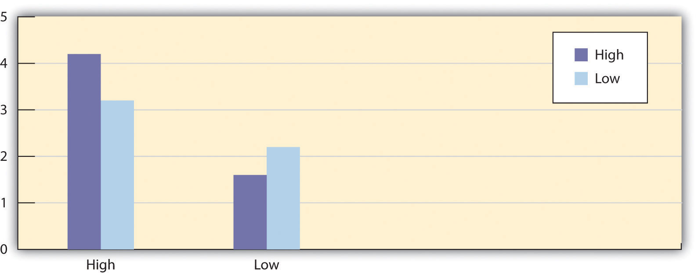
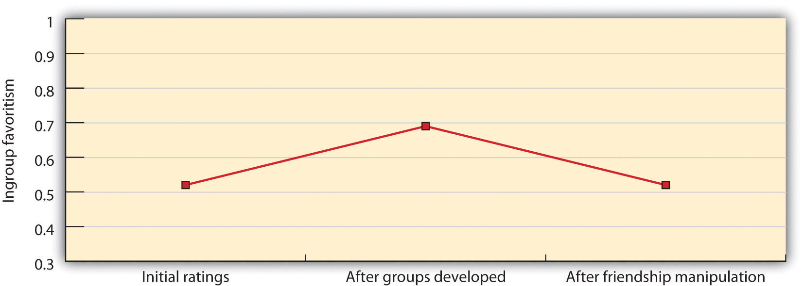
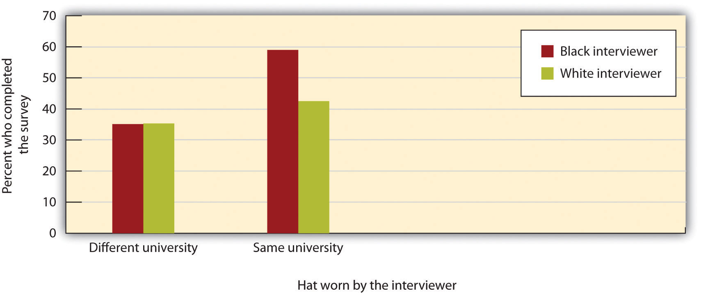

We have seen that social categorization is a basic part of human nature and one that helps us to simplify our social worlds, to draw quick (if potentially inaccurate) conclusions about others, and to feel good about ourselves. In many cases, our preferences for ingroups may be relatively harmless—we may prefer to socialize with people who share our race or ethnicity, for instance, but without particularly disliking the others. But categorizing others may also lead to prejudice and discrimination, and it may even do so without our awareness. Because prejudice and discrimination are so harmful to so many people, we must all work to get beyond them.
Discrimination influences the daily life of its victims in areas such as employment, income, financial opportunities, housing and educational opportunities, and medical care. Discrimination has been blamed for the large percentage of Blacks living in poverty and for their lack of access to high-paying jobs (Williams & Rucker, 1996).Williams, D. R., & Rucker, T. (Eds.). (1996). Socioeconomic status and the health of racial minority populations. New York, NY: Plenum Press. Blacks have higher mortality rates than Whites for 8 of the 10 leading causes of death in the United States (Williams, 1999)Williams, D. R. (1999). Race, socioeconomics status, and health: The added effect of racism and discrimination. In Adler, N. E., Boyce, T., Chesney, M. A., & Cohen, S. (1994). Socioeconomic status and health: The challenge of the gradient. American Psychologist, 49, 15-24. and have less access to and receive poorer-quality health care, even controlling for other variables such as level of health insurance. Suicide rates among lesbians and gays are substantially higher than rates for the general population, and it has been argued that this in part due to the negative outcomes of prejudice, including negative attitudes and resulting social isolation (Halpert, 2002).Halpert, S. C. (2002). Suicidal behavior among gay male youth. Journal of Gay and Lesbian Psychotherapy, 6, 53–79. And in some rare cases, discrimination even takes the form of hate crimes such as gay bashing.
More commonly, members of minority groups also face a variety of small hassles, such as bad service in restaurants, being stared at, and being the target of jokes (Swim, Hyers, Cohen, Fitzgerald, & Bylsma, 2003).Swim, J. K., Hyers, L. L., Cohen, L. L., Fitzgerald, D. C., & Bylsma, W. H. (2003). African American college students’ experiences with everyday racism: Characteristics of and responses to these incidents. Journal of Black Psychology, 29(1), 38–67. But even these everyday “minor” forms of discrimination can be problematic because they may produce anger and anxiety among stigmatized group members and may lead to stress and other psychological problems (Klonoff, Landrine, & Campbell, 2000; Klonoff, Landrine, & Ullman, 1999).Klonoff, E. A., Landrine, H., & Campbell, R. (2000). Sexist discrimination may account for well-known gender differences in psychiatric symptoms. Psychology of Women Quarterly, 24, 93–99; Klonoff, E. A., Landrine, H., & Ullman, J. B. (1999). Racial discrimination and psychiatric symptoms among blacks. Cultural Diversity and Ethnic Minority Psychology, 5(4), 329–339. Stigmatized individuals who report experiencing more exposure to discrimination or other forms of unfair treatment also report more depression, anger, and anxiety and lower levels of life satisfaction and happiness (Swim, Hyers, Cohen, & Ferguson, 2001).Swim, J. K., Hyers, L. L., Cohen, L. L., & Ferguson, M. J. (2001). Everyday sexism: Evidence for its incidence, nature, and psychological impact from three daily diary studies. Journal of Social Issues, 57(1), 31–53.
Of course most of us do try to keep our stereotypes and our prejudices out of mind, and we work hard to avoid discriminating (Richeson & Shelton, 2007).Richeson, J. A., & Shelton, J. N. (2007). Negotiating interracial interactions: Costs, consequences, and possibilities. Current Directions in Psychological Science, 16(6), 316–320. doi: 10.1111/j.1467–8721.2007.00528.x But even when we work to keep our negative beliefs under control, this does not mean that they easily disappear. Neil Macrae and his colleagues (Macrae, Bodenhausen, Milne, & Jetten, 1994)Macrae, C. N., Bodenhausen, G. V., Milne, A. B., & Jetten, J. (1994). Out of mind but back in sight: Stereotypes on the rebound. Journal of Personality and Social Psychology, 67(5), 808–817. asked British college students to write a paragraph describing a skinhead (a member of a group that is negatively stereotyped in England). One half of the participants were asked to be sure to not use their stereotypes when they were judging him, whereas the other half simply wrote whatever came to mind. Although the participants who were asked to suppress their thoughts were able to do it, this suppression didn’t last very long. After they had suppressed their stereotypes, these beliefs quickly popped back into mind, making it even more likely that they would be used immediately later.
But stereotypes are not always and inevitably activated when we encounter people from other groups. We can and we do get past them, although doing so may take some effort on our part (Blair, 2002).Blair, I. V. (2002). The malleability of automatic stereotypes and prejudice. Personality and Social Psychology Review, 6(3), 242–261. There are a number of techniques that we can use to try to improve our attitudes toward outgroups, and at least some of them have been found to be effective. Kawakami, Dovidio, Moll, Hermsen, and Russin (2000)Kawakami, K., Dovidio, J. F., Moll, J., Hermsen, S., & Russin, A. (2000). Just say no (to stereotyping): Effects of training in the negation of stereotypic associations on stereotype activation. Journal of Personality and Social Psychology,78 (5), 871–888. found that students who practiced responding in nonstereotypical ways to members of other groups became better able to avoid activating their negative stereotypes on future occasions. And a number of studies have found that we become less prejudiced when we are exposed to and think about group members who have particularly positive or nonstereotypical characteristics. For instance, Blair, Ma, and Lenton (2001)Blair, I. V., Ma, J. E., & Lenton, A. P. (2001). Imagining stereotypes away: The moderation of implicit stereotypes through mental imagery. Journal of Personality and Social Psychology, 81(5), 828–841. asked their participants to imagine a woman who was “strong” and found that doing so decreased stereotyping of women. Similarly, Bodenhausen, Schwarz, Bless, and Wanke (1995)Bodenhausen, G. V., Schwarz, N., Bless, H., & Wanke, M. (1995). Effects of atypical exemplars on racial beliefs: Enlightened racism or generalized appraisals? Journal of Experimental Social Psychology, 31, 48–63. found that when White students thought about positive Black role models—such as Oprah Winfrey and Michael Jordan—they became less prejudiced toward Blacks.
One variable that makes us less prejudiced is education. People who are more educated express fewer stereotypes and prejudice in general. This is true for students who enroll in courses that are related to stereotypes and prejudice, such as a course on gender and ethnic diversity (Rudman, Ashmore, & Gary, 2001),Rudman, L. A., Ashmore, R. D., & Gary, M. L. (2001). “Unlearning” automatic biases: The malleability of implicit prejudice and stereotypes. Journal of Personality and Social Psychology, 81(5), 856–868. and is also true more generally—education reduces prejudice, regardless of what particular courses you take (Sidanius, Sinclair, & Pratto, 2006).Sidanius, J., Sinclair, S., & Pratto, F. (2006). Social dominance orientation, gender, and increasing educational exposure. Journal of Applied Social Psychology, 36(7), 1640–1653.
The effects of education on reducing prejudice are probably due in large part to the new social norms that people are introduced to in school. Social norms define what is appropriate and inappropriate, and we can effectively change stereotypes and prejudice by changing the relevant norms about them. Jetten, Spears, and Manstead (1997)Jetten, J., Spears, R., & Manstead, A. S. R. (1997). Strength of identification and intergroup differentiation: The influence of group norms. European Journal of Social Psychology, 27(5), 603–609. manipulated whether students thought that the other members of their university favored equal treatment of others or believed that others thought it was appropriate to favor the ingroup. They found that perceptions of what the other group members believed had an important influence on the beliefs of the individuals themselves. The students were more likely to show ingroup favoritism when they believed that the norm of their ingroup was to do so, and this tendency was increased for students who had high social identification with the ingroup.
Sechrist and Stangor (2001)Sechrist, G., & Stangor, C. (2001). Perceived consensus influences intergroup behavior and stereotype accessibility. Journal of Personality and Social Psychology, 80(4), 645–654. selected White college students who were either high or low in prejudice toward Blacks and then provided them with information indicating that their prejudiced or unprejudiced beliefs were either shared or not shared by the other students at their university. Then the students were asked to take a seat in a hallway to wait for the next part of the experiment. A Black confederate was sitting in one seat at the end of the row, and the dependent measure was how far away the students sat from her.
As you can see in Figure 12.8 "The Role of Norms in Intergroup Behavior", high prejudice students who learned that other students were also prejudiced sat farther away from the Black confederate in comparison with high prejudice individuals who were led to believe that their beliefs were not shared. On the other hand, students who were initially low in prejudice and who believed these views were shared sat closer to the Black confederate in comparison with low prejudice individuals who were led to believe that their beliefs were not shared. These results demonstrate that our perceptions of relevant social norms can strengthen or weaken our tendencies to engage in discriminatory behaviors.
Figure 12.8 The Role of Norms in Intergroup Behavior
White college students who were low in prejudice toward Blacks sat closer to the Black confederate when they had been told that their beliefs were shared with other group members at their university. On the other hand, White college students who were high in prejudice sat farther away from the Black confederate when they had been told that their beliefs were shared with other group members at their university. Data are from Sechrist and Stangor (2001).Sechrist, G., & Stangor, C. (2001). Perceived consensus influences intergroup behavior and stereotype accessibility. Journal of Personality and Social Psychology, 80(4), 645–654.
The influence of social norms is powerful, and long-lasting changes in beliefs about outgroups will occur only if they are supported by changes in social norms. Prejudice and discrimination thrive in environments in which they are perceived to be the norm, but they die when the existing social norms do not allow it. And because social norms are so important, the behavior of individuals can help create or reduce prejudice and discrimination. Discrimination, prejudice, and even hate crimes such as gay bashing will be more likely to continue if people do not respond to or confront them when they occur.
What this means is that if you believe that prejudice is wrong, you must confront it when you see it happening. Czopp, Monteith, and Mark (2006)Czopp, A. M., Monteith, M. J., & Mark, A. Y. (2006). Standing up for a change: Reducing bias through interpersonal confrontation. Journal of Personality and Social Psychology, 90(5), 784–803. had White participants participate in a task in which it was easy to unintentionally stereotype a Black person, and as a result, many of the participants did so. Then, confederates of the experimenter confronted the students about their stereotypes, saying things such as “Maybe it would be good to think about Blacks in other ways that are a little more fair?” or “It just seems that you sound like some kind of racist to me. You know what I mean?” Although the participants who had been confronted experienced negative feelings about the confrontation and also expressed negative opinions about the person who confronted them, the confrontation did work. The students who had been confronted expressed less prejudice and fewer stereotypes on subsequent tasks than did the students who had not been confronted.
As this study concluded, taking steps to reduce prejudice is everyone’s duty—having a little courage can go a long way in this regard. Confronting prejudice can lead other people to think that we are complaining and therefore to dislike us (Kaiser & Miller, 2001; Shelton & Stewart, 2004),Kaiser, C. R., & Miller, C. T. (2001). Stop complaining! The social costs of making attributions to discrimination. Personality and Social Psychology Bulletin, 27, 254–263; Shelton, N. J., & Stewart, R. E. (2004). Confronting perpetrators of prejudice: The inhibitory effects of social costs. Psychology of Women Quarterly, 28, 215–222. but confronting prejudice is not all negative for the person who confronts. Although it is embarrassing to do so, particularly if we are not completely sure that the behavior was in fact prejudice, when we fail to confront, we may frequently later feel guilty that we did not (Shelton, Richeson, Salvatore, & Hill, 2006).Shelton, J. N., Richeson, J. A., Salvatore, J., & Hill, D. M. (Eds.). (2006). Silence is not golden: The intrapersonal consequences of not confronting prejudice. Mahwah, NJ: Lawrence Erlbaum.
One of the reasons that people may hold stereotypes and prejudices is that they view the members of outgroups as different from them. We may become concerned that our interactions with people from different racial groups will be unpleasant, and these anxieties may lead us to avoid interacting with people from those groups (Mallett, Wilson, & Gilbert, 2008).Mallett, R. K., Wilson, T. D., & Gilbert, D. T. (2008). Expect the unexpected: Failure to anticipate similarities leads to an intergroup forecasting error. Journal of Personality and Social Psychology, 94(2), 265–277. doi: 10.1037/0022–3514.94.2.94.2.265 What this suggests is that a good way to reduce prejudice is to help people create closer connections with members of different groups. People will be more favorable toward others when they learn to see those other people as more similar to them, as closer to the self, and to be more concerned about them.
The idea that intergroup contact will reduce prejudice, known as the contact hypothesisThe idea that intergroup contact will reduce prejudice., is simple: If children from different ethnic groups play together in school, their attitudes toward each other should improve. And if we encourage college students to travel abroad, they will meet people from other cultures and become more positive toward them.
One important example of the use of intergroup contact to influence prejudice came about as a result of the important U.S. Supreme Court case Brown v. Board of Education in 1954. In this case, the Supreme Court agreed, based in large part on the testimony of psychologists, that busing Black children to schools attended primarily by White children, and vice versa, would produce positive outcomes on intergroup attitudes, not only because it would provide Black children with access to better schools, but also because the resulting intergroup contact would reduce prejudice between Black and White children. This strategy seemed particularly appropriate at the time it was implemented because most schools in the United States then were highly segregated by race.
The strategy of busing was initiated after the Supreme Court decision, and it had a profound effect on schools in the United States. For one, the policy was very effective in changing school makeup—the number of segregated schools decreased dramatically during the 1960s after the policy was begun. Busing also improved the educational and occupational achievement of Blacks and increased the desire of Blacks to interact with Whites, for instance, by forming cross-race friendships (Stephan, 1999).Stephan, W. (1999). Reducing prejudice and stereotyping in schools. New York, NY: Teacher’s College Press. Overall, then, the case of desegregating schools in the United States supports the expectation that intergroup contact, at least in the long run, can be successful in changing attitudes. Nevertheless, as a result of several subsequent U.S. Supreme Court decisions, the policy of desegregating schools via busing was not continued past the 1990s.
Although student busing to achieve desegregated schools represents one prominent example of intergroup contact, such contact occurs in many other areas as well. Taken together, there is substantial support for the effectiveness of intergroup contact in improving group attitudes in a wide variety of situations, including schools, work organizations, military forces, and public housing. Pettigrew and Tropp (2006)Pettigrew, T. F., & Tropp, L. R. (2006). A meta-analytic test of intergroup contact theory. Journal of Personality and Social Psychology, 90(5), 751–783. conducted a meta-analysis in which they reviewed over 500 studies that had investigated the effects of intergroup contact on group attitudes. They found that attitudes toward groups that were in contact became more positive over time. Furthermore, positive effects of contact were found on both stereotypes and prejudice and for many different types of contacted groups.
The positive effects of intergroup contact may be due in part to increases in other-concern. Galinsky and Moskowitz (2000)Galinsky, A. D., & Moskowitz, G. B. (2000). Perspective-taking: Decreasing stereotype expression, stereotype accessibility, and in-group favoritism. Journal of Personality and Social Psychology, 78(4), 708–724. found that leading students to take the perspective of another group member—which increased empathy and closeness to the person—also reduced prejudice. And the behavior of students on college campuses demonstrates the importance of connecting with others and the dangers of not doing so. Sidanius, Van Laar, Levin, and Sinclair (2004)Sidanius, J., Van Laar, C., Levin, S., & Sinclair, S. (2004). Ethnic enclaves and the dynamics of social identity on the college campus: The good, the bad, and the ugly. Journal of Personality and Social Psychology, 87(1), 96–110. found that students who joined exclusive campus groups, including fraternities, sororities, and minority ethnic organizations (such as the African Student Union), were more prejudiced to begin with and became even less connected and more intolerant of members of other social groups over the time that they remained in the organizations. It appears that memberships in these groups focused the students on themselves and other people who were very similar to them, leading them to become less tolerant of others who are different.
Although intergroup contact does work, it is not a panacea because the conditions necessary for it to be successful are frequently not met. Contact can be expected to work only in situations that create the appropriate opportunities for change. For one, contact will only be effective if it provides information demonstrating that the existing stereotypes held by the individuals are incorrect. When we learn more about groups that we didn’t know much about before, we learn more of the truth about them, leading us to be less biased in our beliefs. But if our interactions with the group members do not allow us to learn new beliefs, then contact cannot work.
When we first meet someone from another category, we are likely to rely almost exclusively on our stereotypes (Brodt & Ross, 1998).Brodt, S. E., & Ross, L. D. (1998). The role of stereotyping in overconfident social prediction. Social Cognition, 16, 225–252. However, when we get to know the individual well (e.g., as a student in a classroom learns to know the other students over a school year), we may get to the point where we ignore that individual’s group membership almost completely, responding to him or her entirely at the individual level (Madon et al., 1998).Madon, S., Jussim, L., Keiper, S., Eccles, J., Smith, A., & Palumbo, P. (1998). The accuracy and power of sex, social class, and ethnic stereotypes: A naturalistic study in person perception. Personality and Social Psychology Bulletin, 24(12), 1304–1318. Thus contact is effective in part because it leads us to get past our perceptions of others as group members and to individuate them.
When we get past group memberships and focus more on the individuals in the groups, we begin to see that there is a great deal of variability among the group members and that our global and undifferentiating group stereotypes are actually not that informative (Rothbart & John, 1985).Rothbart, M., & John, O. P. (1985). Social categorization and behavioral episodes: A cognitive analysis of the effects of intergroup contact. Journal of Social Issues, 41, 81–104. Successful intergroup contact tends to reduce the perception of outgroup homogeneity. Contact also helps us feel more positively about the members of the other group, and this positive affect makes us like them more.
Intergroup contact is also more successful when the people involved in the contact are motivated to learn about the others. One factor that increases this motivation is interdependence—a state in which the group members depend on each other for successful performance of the group goals (Neuberg & Fiske, 1987).Neuberg, S. L., & Fiske, S. T. (1987). Motivational influences on impression formation: Outcome dependency, accuracy-driven attention, and individuating processes. Journal of Personality and Social Psychology, 53, 431–444. The importance of interdependence can be seen in the success of cooperative learning techniques, such as the jigsaw classroom (Aronson, Blaney, Stephan, Sikes, & Snapp, 1978; Aronson, 2004).Aronson, E., Blaney, N., Stephan, C., Sikes, J., & Snapp, M. (1978). The jig-saw classroom. London, England: Sage; Aronson, E. (2004). Reducing hostility and building compassion: Lessons from the jigsaw classroom. In A. G. Miller (Ed.), The social psychology of good and evil (pp. 469–488). New York, NY: Guilford Press.
The jigsaw classroomAn approach to learning in which students from different racial or ethnic groups work together, in an interdependent way, to master material. is an approach to learning in which students from different racial or ethnic groups work together, in an interdependent way, to master material. The class is divided into small learning groups, where each group is diverse in ethnic and gender composition. The assigned material to be learned is divided into as many parts as there are students in the group, and members of different groups who are assigned the same task meet together to help develop a strong report. Each student then learns his or her own part of the material and presents this piece of the puzzle to the other members of his or her group. The students in each group are therefore interdependent in learning all the material. A wide variety of techniques, based on principles of the jigsaw classroom, are in use in many schools around the United States and the world, and research studying these approaches has found that cooperative, interdependent experiences among students from different social groups are effective in reducing negative stereotyping and prejudice (Stephan, 1999).Stephan, W. (1999). Reducing prejudice and stereotyping in schools. New York, NY: Teacher’s College Press.
In sum, we can say that contact will be most effective when it is easier to get to know, and become more respectful of, the members of the other group and when the social norms of the situation promote equal, fair treatment of all groups. If the groups are treated unequally, for instance, by a teacher or leader who is prejudiced and who therefore treats the different groups differently, or if the groups are in competition rather than cooperation, there will be no benefit. In cases when these conditions are not met, contact may not be effective and may in fact increase prejudice, particularly when it confirms stereotypical expectations (Stangor, Jonas, Stroebe, & Hewstone, 1996).Stangor, C., Jonas, K., Stroebe, W., & Hewstone, M. (1996). Development and change of national stereotypes and attitudes. European Journal of Social Psychology, 26, 663–675. Finally, it is important that enough time be allowed for the changes to take effect. In the case of busing in the United States, for instance, the positive effects of contact seemed to have been occurring, but they were not happening particularly fast.
Let’s consider in the next section still another way that intergroup contact can reduce prejudice—the idea that prejudice can be reduced for people who have friends who are friends with members of the outgroup—the extended-contact hypothesisThe prediction that people who have friends from other social groups will be more accepting of all members of those groups..
The Extended-Contact Hypothesis
Although the contact hypothesis proposes that direct contact between people from different social groups will produce more positive attitudes between them, recent evidence suggests that prejudice can also be reduced for people who have friends who are friends with members of the outgroup, even if the individual does not have direct contact with the outgroup members himself or herself. This hypothesis is known as the extended-contact hypothesis. Supporting this prediction, Wright, Aron, McLaughlin-Volpe, and Ropp (1997)Wright, S. C., Aron, A., McLaughlin-Volpe, T., & Ropp, S. A. (1997). The extended contact effect: Knowledge of cross-group friendships and prejudice. Journal of Personality and Social Psychology, 73(1), 73–90. found in two correlational studies that college students who reported that their own friends had friends who were from another ethnic group reported more positive attitudes toward that outgroup than did students who did not have any friends who had outgroup friends, even controlling for the participants’ own outgroup friendships.
Wright et al. (1997) also tested the extended-contact hypothesis experimentally. Participants were four groups of 14 students, and each group spent a whole day in the lab. On arrival, 7 participants were assigned to the “green” group, and 7 to the “blue” group, supposedly on the basis of similar interests. To create strong ingroup identity and to produce competition between the groups, the group members wore blue and green t-shirts and engaged in a series of competitive tasks. Participants then expressed their initial thoughts and feelings about the outgroup and its members.
Then, supposedly as part of an entirely different study, one participant was randomly selected from each group, and the two were taken to a separate room in which they engaged in a relationship-building task that has been shown to quickly create feelings of friendship between two strangers. Then the two members from each team were then reunited with their original groups, where they were encouraged to describe their experience with the other group member in the friendship-building task.
In the final phase, the groups then engaged in another competitive task, and participants rated their thoughts and feelings about the outgroup and its members again. As you can see in the following figure, and supporting the extended-contact hypothesis, results showed that the participants (including those who did not participate in the closeness task themselves) were more positive toward the outgroup after than before the two team members had met. This study, as well as many other studies, supports the importance of cross-group friendships in promoting favorable outgroup attitudes (Page-Gould, Mendoza-Denton, & Tropp, 2008; Shook & Fazio, 2008).Page-Gould, E., Mendoza-Denton, R., & Tropp, L. R. (2008). With a little help from my cross-group friend: Reducing anxiety in intergroup contexts through cross-group friendship. Journal of Personality and Social Psychology, 95(5), 1080–1094. doi: 10.1037/0022–3514.95.5.1080; Shook, N. J., & Fazio, R. H. (2008). Interracial roommate relationships: An experimental field test of the contact hypothesis. Psychological Science, 19(7), 717–723. doi: 10.1111/j.1467–9280.2008.02147.x
Figure 12.9 The Extended-Contact Hypothesis
This figure shows how members of the two groups, which were in competition with each other, rated each other before and after the experimental manipulation of friendship. You can see that group relationships, which were becoming more negative, changed to being more positive after the intervention. Data are from Wright, Aron, McLaughlin-Volpe, and Ropp (1997).Wright, S. C., Aron, A., McLaughlin-Volpe, T., & Ropp, S. A. (1997). The extended contact effect: Knowledge of cross-group friendships and prejudice. Journal of Personality and Social Psychology, 73(1), 73–90.
The research on intergroup contact suggests that although contact may improve prejudice, it may make it worse if it is not implemented correctly. Improvement is likely only when the contact moves the members of the groups to feel that they are closer to each other rather than further away from each other. In short, groups are going to have better attitudes toward each other when they see themselves more similarly to each other—when they feel more like one large group than a set of smaller groups.
This fact was demonstrated in a very convincing way in one of the most well known of all social psychological studies. In the “Robbers’ Cave Experiment,” Sherif, Harvey, White, Hood, and Sherif (1961)Sherif, M., Harvey, O. J., White, B. J., Hood, W. R., & Sherif, C. (1961). Intergroup conflict and cooperation: The robbers’ cave experiment. Norman, OK: University of Oklahoma Press. studied the group behavior of 11-year-old boys at a summer camp. Although the boys did not know it, the researchers carefully observed the behaviors of the children during the camp session, with the goal of learning about how group conflict developed and how it might be resolved among the children.
During the first week of the camp, the boys were divided into two groups that camped at two different campsites. During this time, friendly relationships developed among the boys within each of the two groups. Each group developed its own social norms and group structure and became quite cohesive, with a strong positive social identity. The two groups chose names for themselves (the Rattlers and the Eagles), and each made their own group flag and participated in separate camp activities.
At the end of this one-week baseline period, it was arranged that the two groups of boys would become aware of each other’s presence. Furthermore, the researchers worked to create conditions that led to increases in each group’s social identity and at the same time created negative perceptions of the other group. The researchers arranged baseball games, a tug-of-war, and a treasure hunt and offered prizes for the group that won the competitions. Almost immediately, this competition created ingroup favoritism and prejudice, and discrimination quickly followed. By the end of the second week, the Eagles had sneaked up to the Rattlers’ cabin and stolen their flag. When the Rattlers discovered the theft, they in turn raided the Eagles’ cabin, stealing things. There were food fights in the dining room, which was now shared by the groups, and the researchers documented a substantial increase in name-calling and stereotypes of the outgroup. Some fistfights even erupted between members of the different groups.
The researchers then intervened by trying to move the groups closer to each other. They began this third stage of the research by setting up a series of situations in which the boys had to work together to solve a problem. These situations were designed to create interdependence by presenting the boys with superordinate goals—goals that were both very important to them and yet that required the cooperative efforts and resources of both the Eagles and the Rattlers to attain. These goals involved such things as the need to pool money across both groups in order to rent a movie that all the campers wanted to view, or the need to pull together on ropes to get a food truck that had become stuck back onto the road. As the children worked together to meet these goals, the negative perceptions of the group members gradually improved; there was a reduction of hostility between the groups and an emergence of more positive intergroup attitudes.
This strategy was effective because it led the campers to perceive both the ingroup and the outgroup as one large group (“we”) rather than as two separate groups (“us” and “them”). As differentiation between the ingroup and the outgroup decreases, so should ingroup favoritism, prejudice, and conflict. The differences between the original groups are still present, but they are potentially counteracted by perceived similarities in the second superordinate group. The attempt to reduce prejudice by creating a superordinate categorization is known as the goal of creating a common ingroup identityThe experience of social identity that occurs when differences in social grouping at one level are reduced by perceived similarities on a second, superordinate category. (Gaertner & Dovidio, 2008),Gaertner, S. L., & Dovidio, J. F. (Eds.). (2008). Addressing contemporary racism: The common ingroup identity model. New York, NY: Springer Science + Business Media. and we can diagram the relationship as follows:
interdependence and cooperation → common ingroup identity → favorable intergroup attitudes.A substantial amount of research has supported the predictions of the common ingroup identity model. For instance, Samuel Gaertner and his colleagues (Gaertner, Mann, Murrell, & Dovidio, 1989)Gaertner, S. L., Mann, J., Murrell, A., & Dovidio, J. F. (1989). Reducing intergroup bias: The benefits of recategorization. Journal of Personality and Social Psychology, 57(2), 239–249. tested the hypothesis that interdependent cooperation in groups reduces negative beliefs about outgroup members because it leads people to see the others as part of the ingroup (by creating a common identity). In this research, college students were brought to a laboratory where they were each assigned to one of two teams of three members each, and each team was given a chance to create its own unique group identity by working together. Then, the two teams were brought into a single room to work on a problem. In one condition, the two teams were told to work together as a larger, six-member team to solve the problem, whereas in the other condition, the two teams worked on the problem separately.
Consistent with the expected positive results of creating a common group identity, the interdependence created in the condition where the teams worked together increased the tendency of the team members to see themselves as members of a single, larger team, and this in turn reduced the tendency for each group to show ingroup favoritism.
But the benefits of recategorization are not confined to laboratory settings—they also appear in our everyday interactions with other people. Jason Neir and his colleagues (Neir et al., 2001)Neir, J. A., Gaertner, S. L., Dovidio, J. F., Banker, B. S., Ward, C. M., & Rust, C. R. (2001). Changing interracial evaluations and behavior: The effects of a common group identity. Group Processes and Intergroup Relations, 4, 299–316. had Black and White interviewers approach White students who were attending a football game. The dependent measure was whether or not they agreed to help the interviewer by completing a questionnaire. However, the interviewers also wore hats representing either one of the two universities who were playing in the game. As you can see in Figure 12.10 "Recategorization and Helping Behavior", the data were analyzed both by whether the interviewer and the student were of the same race (either both White or one White and one Black) and also by whether they wore hats from the same or different universities. As expected on the basis of recategorization and the common ingroup identity approach, the White students were significantly more likely to help the Black interviewers when they wore a hat of the same university as that worn by the interviewee. The hat evidently led the White students to recategorize the interviewer as part of the university ingroup, leading to more helping. However, whether the individuals shared university affiliation did not influence helping for the White participants, presumably because they already saw the interviewer as a member of the ingroup (the interviewer was also White).
Figure 12.10 Recategorization and Helping Behavior
In this field study, White and Black interviewers asked White students attending a football game to help them by completing a questionnaire. The data were analyzed both by whether the request was to a White (ingroup) or Black (outgroup) student and also by whether the individual whose help was sought wore the same hat that they did or a different hat. Results supported the common ingroup identity model. Helping was much greater for outgroup members when hats were the same. Data are from Neir et al. (2001).Neir, J. A., Gaertner, S. L., Dovidio, J. F., Banker, B. S., Ward, C. M., & Rust, C. R. (2001). Changing interracial evaluations and behavior: The effects of a common group identity. Group Processes and Intergroup Relations, 4, 299–316.
Again, the implications of these results are clear and powerful. If we want to improve attitudes among people, we must get them to see each other as more similar and less different. And even relatively simple ways of doing so, such as wearing a hat that suggests an ingroup identification, can be successful.